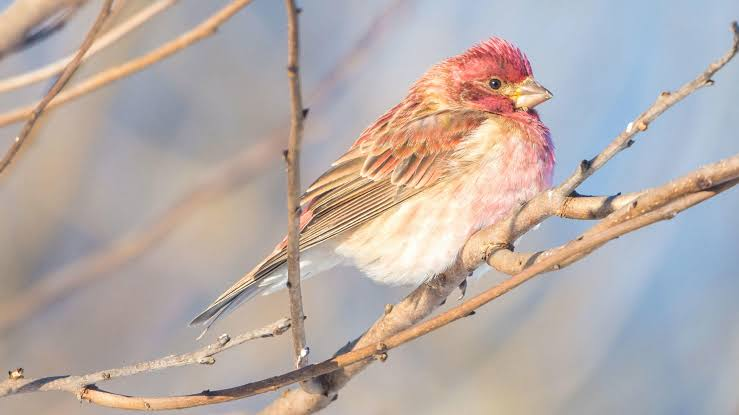

Finch
Birds
The true finches are small to medium-sized passerine birds in the family Fringillidae. Finches have stout conical bills adapted for eating seeds and often have colourful plumage. They occupy a great range of habitats where they are usually resident and do not migrate.
Family: Fringillidae; Leach, 1820
Clutch size: Lesser goldfinch: 3 – 4
Mass: Lesser goldfinch: 8 – 12 g
Scientific name: Fringillidae
Kingdom: Animalia
Length: Lesser goldfinch: 9 – 12 cm, Collared grosbeak: 22 – 24 cm, Andean siskin: 9.5 – 11 cm
Finch, any of several hundred species of small conical-billed, seed-eating songbirds (order Passeriformes). Well-known or interesting birds classified as finches include the bunting, canary, cardinal, chaffinch, crossbill, Galapagos finch, goldfinch, grass finch, grosbeak, sparrow, and weaver.
Finches are small, compactly built birds ranging in length from 10 to 27 cm (3 to 10 inches). Most finches use their heavy conical bills to crack the seeds of grasses and weeds. Many species supplement their diet with insects as well.
The nestlings are unable to crack seeds and so are usually fed insects. Many finches are brightly coloured, often with various shades of red and yellow, as in crossbills, goldfinches, and cardinals.
Others, especially those that live in grass or low bushes, are demurely clad and protectively coloured, although even these may be attractively spotted and streaked.
Finches are conspicuous songbirds throughout the temperate areas of the Northern Hemisphere and South America and in parts of Africa.
Indeed, they are among the dominant birds in many areas, in numbers of both individuals and species. Several inconspicuous species of sparrows, such as the house sparrow (Passer domesticus), are particularly widespread.
The seed-eating habits of many finches allow them to winter in cold areas, so they make up an even larger segment of the birdlife in that season.
Biology of Finch
Fossil record
Fossil remains of true finches are rare, and those that are known can mostly be assigned to extant genera at least. Like the other Passeroidea families, the true finches seem to be of roughly Middle Miocene origin, around 20 to 10 million years ago (Ma).
An unidentifable finch fossil from the Messinian age, around 12 to 7.3 million years ago (Ma) during the Late Miocene subepoch, has been found at Polgárdi in Hungary.
Distribution and habitat
The finches have a near-global distribution, being found across the Americas, Eurasia and Africa, as well as some island groups such as the Hawaiian islands.
They are absent from Australasia, Antarctica, the Southern Pacific and the islands of the Indian Ocean, although some European species have been widely introduced in Australia and New Zealand.
Finches are typically inhabitants of well-wooded areas, but some can be found on mountains or even in deserts.